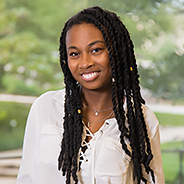

Gianna Williams

Education
- American University, Washington, DC
- Bachelor of Science in Computer Science
- Minor in Entrepreneurship and Sociology
- Expected Graduation: May 2022
- GPA: 3.63/4.00
Frederick Douglass Distinguished Scholar
- One of five American University Honors students selected out of 1,084 applicants to participate in a leadership development, career readiness, and graduate/professional school preparation program.
- Awarded a full scholarship (tuition, housing, books, fees, and transportation
Expierence
Quant Support Lab, Tutor
-
Cultivate an inclusive learning environment for first years in Computer Science. Where I answer questions, test prep and tutor students at American University Quantitative Support lab.
iDTech Camp, Instructor
-
Fostered a fun and safe environment while teaching new technology and creative thinking to an average of 10 students per week.
Twitter, Early Bird Camper
-
Learned to build new features for Twitter: met Twitter engineers: and, toured San Francisco in a weeklong program.
Never Again Tech, Social Advocacy Chair
-
Lead the Social Advocacy team of Never Again Tech, a company generating a technological revolution against gun violence using Machine Learning for over 100 people.
Black Girls Code, Volunteer
-
Mentor 40 Black Girls interested in computer science by sharing my experiences
as a woman in tech, teaching about career paths, helping with homework, etc.
Legacy Pathways, Intern
-
Redesigned a website for both desktop and mobile interfaces.
- Redeveloped the website for Legacy Pathways, a NASA Career Development Institute.
Skills
Python, NumPy, Recursion, Object Oriented Programming, Regular Expressions, HTML, CSS, Java, Git,TensorFlow,JSON, LabView, Swift,Excel, Ruby, React, Rails, JavaScript, Node.JS, PhP, Python CGI, and SQL.